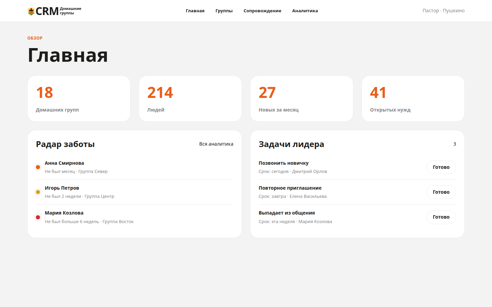
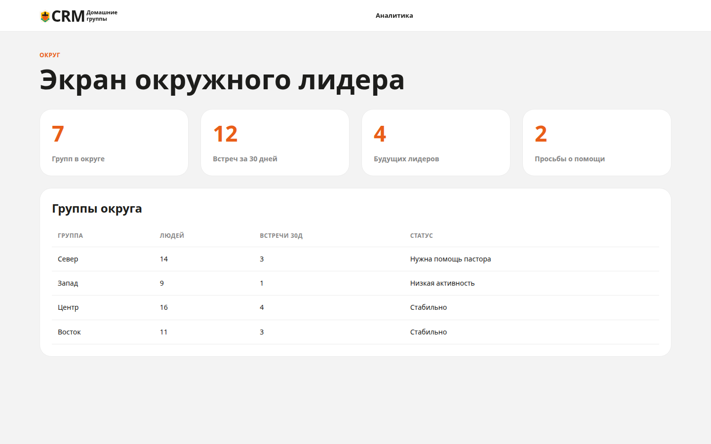
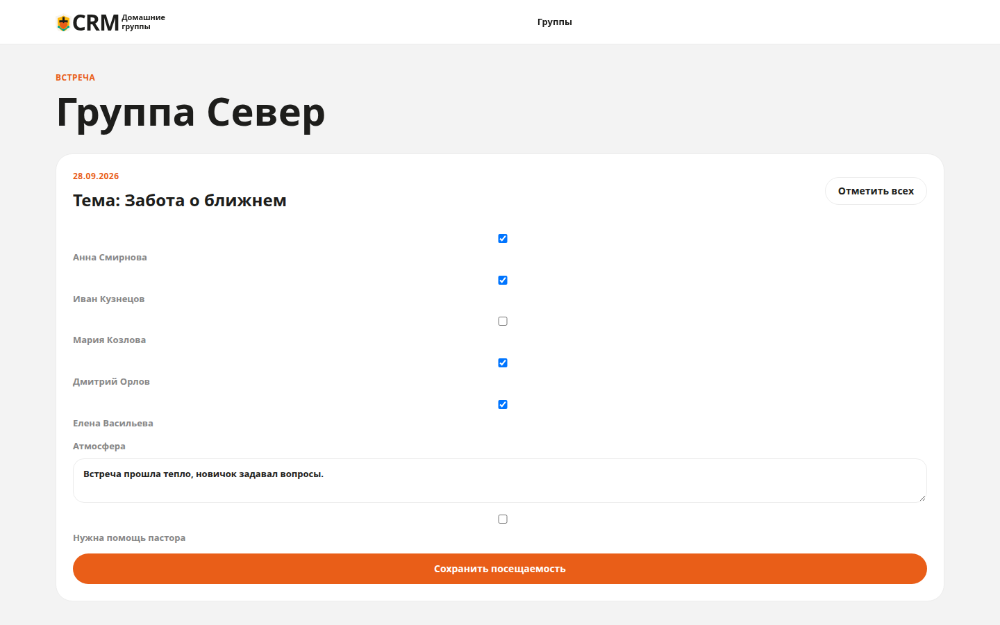
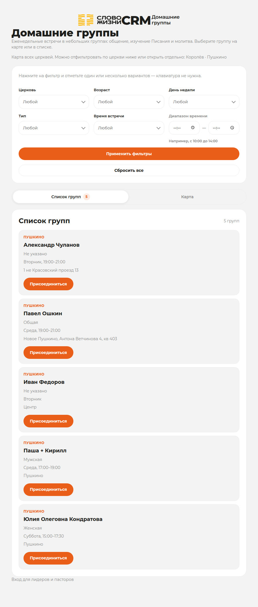
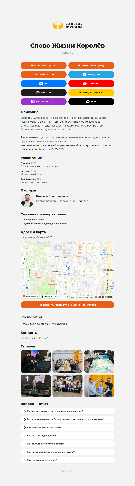
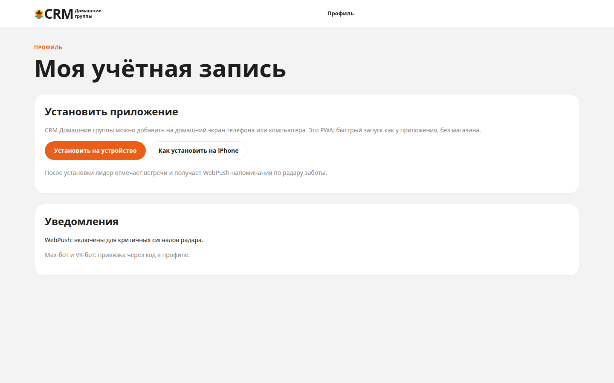
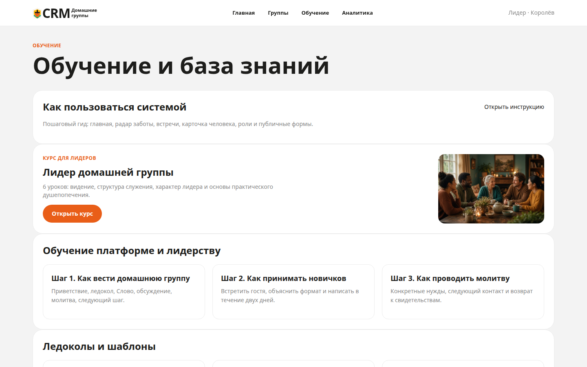
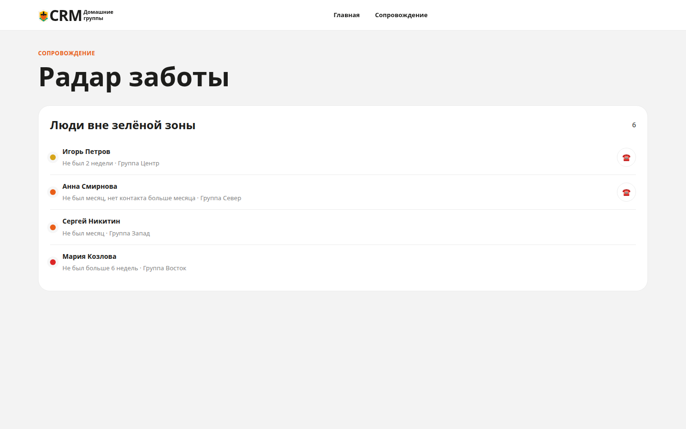
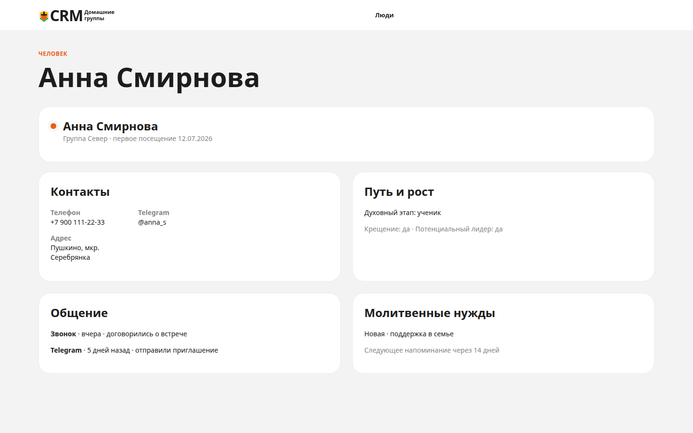
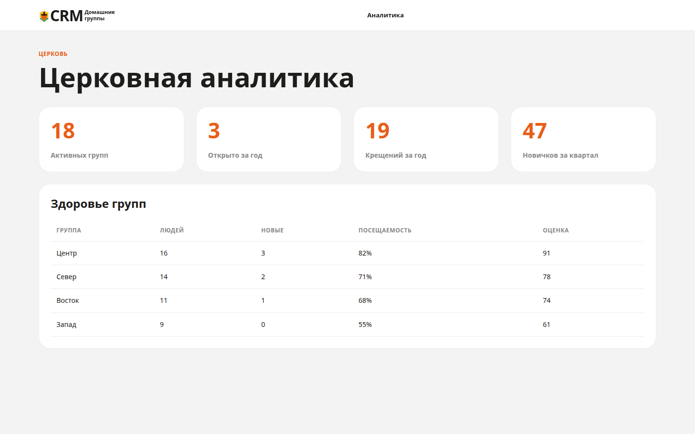

Слайд 1
Платформа для церквей
CRM Домашние группы
Сервис заботы о людях в домашних группах — для пасторов, которые хотят видеть церковь ясно и вовремя приходить на помощь.
Зачем
Одна картина заботы вместо разрозненных чатов
Когда данные о людях живут в таблицах, переписках и памяти лидеров, новички теряются, а риски замечают слишком поздно. Платформа собирает посещаемость, контакты и задачи в одном контуре с понятными зонами ответственности.
Своя домашняя группа: встречи, люди, радар заботы, задачи.
Назначенные округа города: проблемные группы, заявки, структура.
Вся церковь: аналитика, эскалации «нужна помощь», сводки рисков.
Пастору
Видимость церкви и своевременная помощь
- Дашборд и радар заботы по всей церкви
- Аналитика за квартал и год: группы, новички, крещения
- Экран округов: группы с низкой активностью и просьбы о помощи
- Очередь заявок участников и назначение лидеров
- Ежедневная сводка рисков в Max и VK для пастора и администратора
- Карта роста: церковь → округа → группы → ученики и будущие лидеры

Окружному лидеру
Округ под контролем без микроменеджмента каждой группы
- Видимость по назначенным округам (если округа ещё не настроены — по церкви)
- Экран окружного: проблемные группы поднимаются вверх
- Создание домашних групп и назначение лидеров
- Обработка заявок новых участников с учётом района и вместимости
- Округа города: полигоны на карте и автопривязка групп по координатам

Лидеру домашней группы
Инструменты заботы на встрече и между встречами
- Радар заботы и автоматические задачи (новичок 2 / 7 / 30 дней, «выпадает из общения»)
- Встреча: посещаемость, атмосфера, заметки, запрос помощи пастора
- Карточка человека: контакты, история общения, молитвы, путь веры
- Max и VK-бот: быстрые действия, отчёт после встречи, молитва, заявка новичка
- Установка на телефон как приложение (PWA) и обучающие материалы

Гостям
Понятный вход в домашнюю группу без барьеров
- Публичная карта и каталог домашних групп
- Лендинг церкви: расписание, контакты, соцсети
- Заявка в очередь на вступление — не сразу в группу, решение за служителями
- Публичная молитвенная нужда — с именем или анонимно
- Публичное свидетельство о чуде Господа
- Подбор группы по району и геопозиции в заявке и через ботов

Карта и каталог домашних групп
Публичная страница
Своя страница церкви для гостей
У каждой церкви — своя страница: контакты, расписание, пасторы, соцсети и быстрые действия. Всё редактируется в системе, без отдельного сайта.
- Адрес с картой и подсказкой «как добраться»
- Расписание, служения и блок пасторов с фото
- Кнопки: домашние группы, молитва, свидетельство, соцсети
- Ссылка на пожертвования
- Редактируется в настройках церкви

Слово Жизни Королёв
На телефоне
Сайт становится приложением
CRM Домашние группы можно добавить на домашний экран телефона — как обычное приложение. Отдельная установка из магазина не нужна: открыли сайт, нажали «Установить» — и иконка уже рядом с другими программами.
- Лидер открывает заботу о людях одним касанием
- Удобно отметить встречу и перезвонить прямо с телефона
- Работает на привычном телефоне — Android и iPhone
- Всегда актуальная версия: ничего не нужно обновлять вручную

Обучение
Обучение внутри платформы — и по группам, и по системе
Лидеру не нужно искать материалы снаружи: в CRM уже есть курс по домашним группам и понятная инструкция, как пользоваться сервисом.
- Курс «Лидер домашней группы»: видение, структура встречи, характер и душепопечение
- Инструкция «Как пользоваться системой»: радар, встречи, карточки, роли
- База знаний: FAQ, ледоколы, шаблоны сообщений и отчётов
- Церковь может дополнять материалы под свою практику

Что изменится
От разрозненных сигналов к управляемой заботе
| До внедрения | После внедрения |
|---|---|
| Кто давно не был — известно из памяти и чатов | Радар заботы с цветовым статусом по посещению и контакту |
| Новичок легко «выпадает» после первого визита | Автозадачи лидеру на 2, 7 и 30 день после первого посещения |
| Отчёты после встреч в разных форматах | Единый контур посещаемости, карточек и короткого отчёта |
| Гостю сложно найти подходящую группу | Публичная карта, заявка в очередь, подбор по району и гео |
| Пастор узнаёт о кризисе с опозданием | Эскалация «нужна помощь» и ежедневная сводка рисков (Max/VK) |


Внедрение
Как подключить церковь к платформе
Функциональный контур готов. Подключение — это структура, люди и привычка заботы; внешние каналы включаются по готовности секретов.
-
1
Церковь в платформе
Создаём церковь, город, slug и доступы пастора / администратора.
-
2
Структура
Округа на карте, домашние группы, адреса и вместимость.
-
3
Люди и роли
Импорт или ввод людей, назначение лидеров и окружных.
-
4
Обучение лидеров
Раздел «Как пользоваться системой», встречи, радар, карточки.
-
5
Публичные формы
Каталог групп, заявка, молитвенная нужда, свидетельства.
-
6
Каналы связи
По готовности: WebPush, Max/VK-боты, Яндекс/VK ID, почта.
-
7
Пасторский контур
Аналитика, заявки, сводки рисков — регулярный ритм руководства.

Следующий шаг
Подключите вашу церковь
Готовы показать сервис пасторской команде, обсудить внедрение и ответить на вопросы по данным и безопасности.